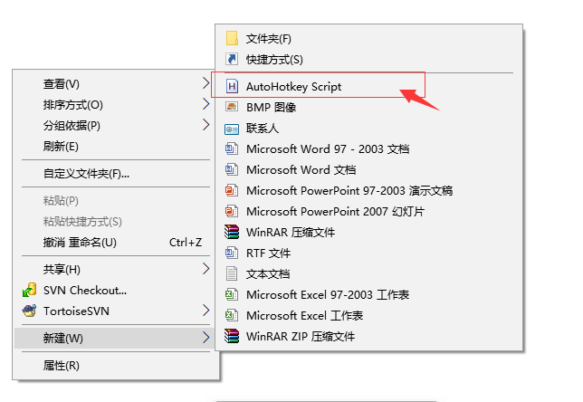
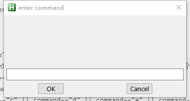

作为走在时代最前沿的程序员，电脑必须玩的溜。要想电脑玩的溜，首先快捷键必须用的熟练。一般我们用快捷键最多的地方就是IDE,高效的写代码的时候是绝对离不开各种快捷键的。可以说,快捷键在很大程度上减少了我们很多繁琐的工作。
很多软件都自带了各种各样的快捷键，并允许用户修改快捷键。window作为一个成熟的系统,也提供了众多快捷键,比如win+E快速打开我的电脑,win+R快速打开命令行,win+L锁定屏幕等等。但是我们发现，win的快捷键还是不能解决一些我们想要的操作。比如想打开位置比较深的某个文件夹(需要逐渐打开好几层目录),想要快速最小化当前窗口，想要快速打开某个应用(而不是跑到桌面点击应用图标启动),或者在众多打开的程序中快速打开某个程序等等。
autohotkey可以说就是为了解决这些问题而诞生的。
安装 Autohotkey
从autohotkey官网下载 安装包。双击安装。安装过程很简单,一直点下一步就好了(放心，不会给你什么全家桶)。安装好后就可以关闭安装窗口。就可以开搞了。
设置快捷键
随便找个目录,鼠标右键新建一个autohotkey的脚本。

映射一个动作——最小化当前窗口
文件名随便叫,创建好脚本后用编辑器打开这个脚本。然后我们就可以开始写autohotkey的代码。输入以下代码:
|
|
写完后我们保存,然后双击该脚本,脚本就开始运行了。这时我们同时按下win+w键，当前正在活动的窗口就会最小化了。
映射一个键——上左下右
经常打字的人都知道,我们编辑文本时要上下左右移动光标,难免要将手移到方向键再移回来打字。对我这样的懒癌后期患者,这简直不能忍。所以我们通过autohotkey将上下左右键映射成其他键。下面是代码:
|
|
我将它们映射成了 alt+h,j,k,l (符合vim风格,读者可以设置成jkli,可能更容易适应)。这样我们在编辑文本时想移动光标直接左手按alt键,右手hjkl就可以移动光标了。是不是很方便？
映射一组键盘操作——删除复制粘贴一整行
很多IDE都有快速删除一行，复制一行的快捷键。我们通过aotohotkey也能实现
|
|
因为autohotkey设置的是windows全局快捷键。这样,我们在任何编辑器都可以使用这些快捷键了,使用alt+d删除一行,alt+y复制一行,alt+p粘贴内容。(但是要注意别把软件自带的快捷键给覆盖了)。
打开某软件或者某网页
我们工作中经常要打开某软件或者某网站,又或者搜索某个东西。通过autohotkey我们可以非常快速的做到这一切。
|
|
这样我们想百度某个关键字的时候,直接选中这个关键字,然后同时按下win+b。系统就会通过默认浏览器打开百度页面(url已经携带了刚才那个关键字了)。
上面的第二段代码实现了快速打开某个应用的功能,我们就不用去管它是否已经启动了,因为这些autohotkey已经帮我们判断了。
如果你不知道应用的 ahk_class ,也可以设置一个快捷键获取应用的ahk_class。
|
|
各个键的映射关系
下面列出一些特殊键的映射关系,更多的请参考官方文档:
| 符号 | 说明 |
|---|---|
| # | window键 |
| ! | alt键 |
| ^ | ctrl键 |
| + | shift键 |
| < | 有两个相同键时,表示左边那个键.比如alt有左右两个键,<! 表示左alt键 |
| > | 表示相同键中右边的那个键 |
| LButton | 鼠标左键 |
| RButton | 鼠标右键 |
| MButton | 鼠标中间键 |
| WheelDown | 滚轮向下 |
| WheelUp | 滚轮向上 |
| Backspace | 退格键 |
| CapsLock | 大小写切换键 |
| Escape | 退出键 |
设置字符串映射
简单映射
我们可能有时会有这样一个场景,经常要输出一串长字符串,而且都是一样的。但是每次都输入也会觉得麻烦,有时甚至可能输错。autohotkey 提供了一种类似字符串映射的功能, 能够让我们去掉这些重复工作。
|
|
运行这个脚本后,你会发现你输入的hello会全部被autohotkey替换成 hello world。
后面一段代码实现了在网页登录框,输出pwd的时候,自动填写用户密码的功能。({tab}用于换行)。建议做字符串映射的时候前面带一个或两个反斜杠’/‘,这样就不会在平常输入文本的时候自动被映射走了。
通过字符串映射运行程序
凡是设置快捷能做的,字符串映射也一样能做。比如我们设置一个输出 /e就打开e盘的功能。
|
|
这样,我们在任何地方输入/e，都会打开e盘了。当然,你也可以打开某个具体的软件,或者打开某个网站。
通过窗口输入命令
有时觉得快捷键太多了记不住,输入字符串又要特地去找个编辑的地方输入,都有各自的缺点。这时,我们就可以使用autohotkey自带的界面来优化我们的体验了。通过autohotkey弹出窗口,我们输入自定义的指令,快速实现我们想要的功能。autohotkey唤出一个输出窗口很简单,只要一句话就搞定: inputBox,fieldName,boxName。fieldName是用于接受用户输入的字符串,boxName是窗口名。下面直接上一个代码示范:
|
|
上面的代码,我们自定义了4个操作。当我们按下快捷键alt+c来唤出输入框。输入tmp的时候,会打开f:\tmp 目录。输入baidu的时候,会打开百度。输入c d e f的时候,会打开对应的盘符。最后,输入idea的时候,会打开idea程序。
autohotkey输入框:

这样,我们可以将任何字符串对应到具体的操作中去。
在具体的某个软件中设置快捷键
有的时候,我们不想在window全局设置快捷键,只想在某个程序中设置快捷键。autohotkey
也可以满足你的要求。
上面的代码实现只在chrome浏览器设置快捷键的作用。通过 #IfWinActive ahk_class Xshell::MainFrame_0 判断当前活动的是否是chrome进程，来激活快捷键设置。进程的ahk_class如何获取上文中已经说过。
平常我们要左右移动chrome标签,chrome虽然提供了ctrl+tab或者ctrl+shift+tab，但是相当别扭。我们用autohotkey将它映射成alt+,键和alt+.键。就可以很方便的实现标签的切换了。alt+n可以快速的新建标签,alt+x快速关闭一个标签。
快速获取鼠标位置处的颜色取值
|
|
各种强大的脚本
autohotkey能做的远不止这些,通过学习autohotkey官网文档 ,你可以了解它们更多强大的功能。点击官网上面各种强大的脚本,上面有各种大神写的脚本。